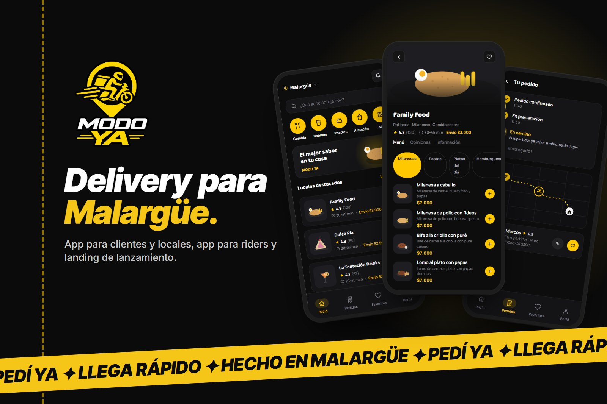
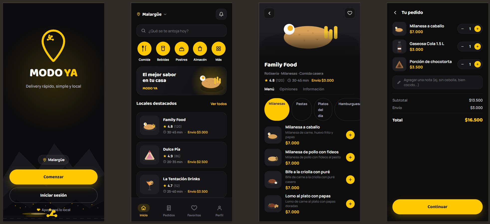
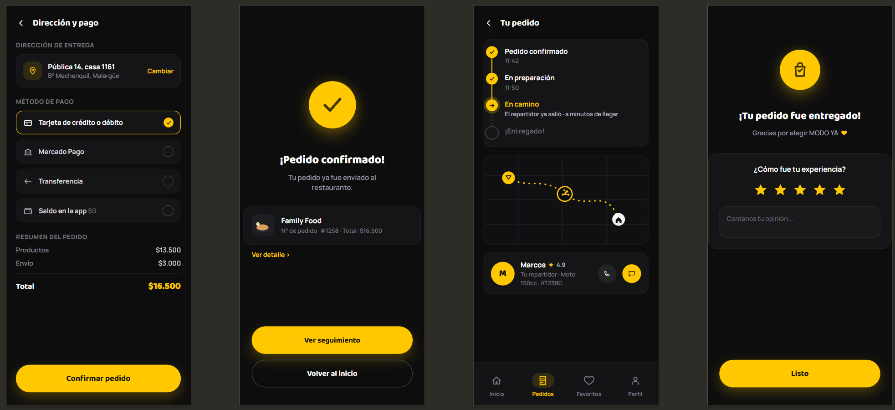
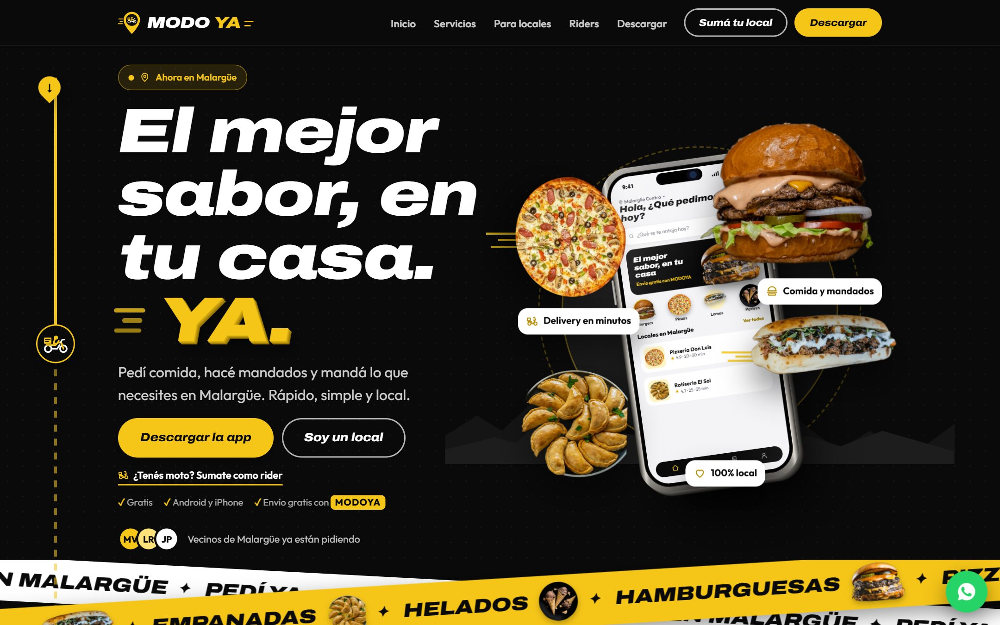
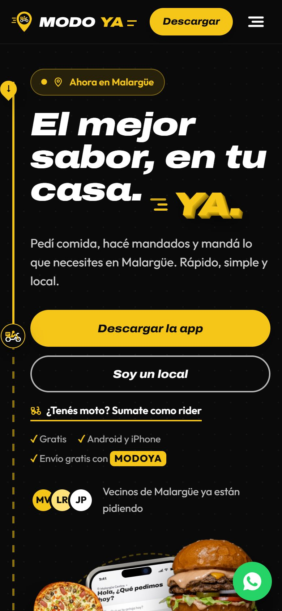
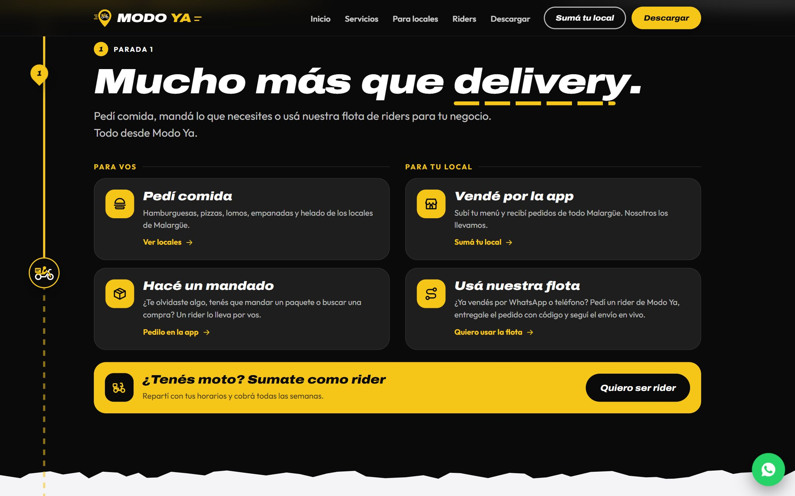
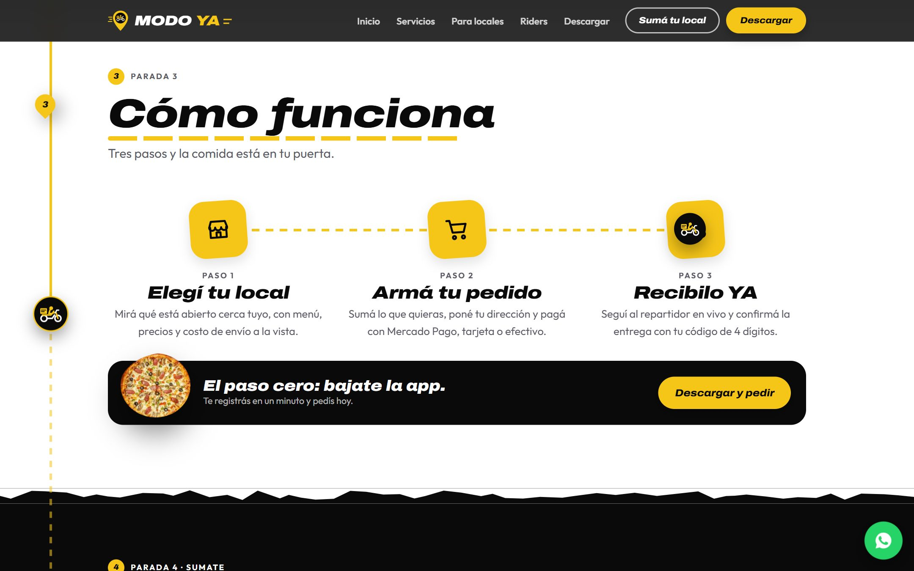
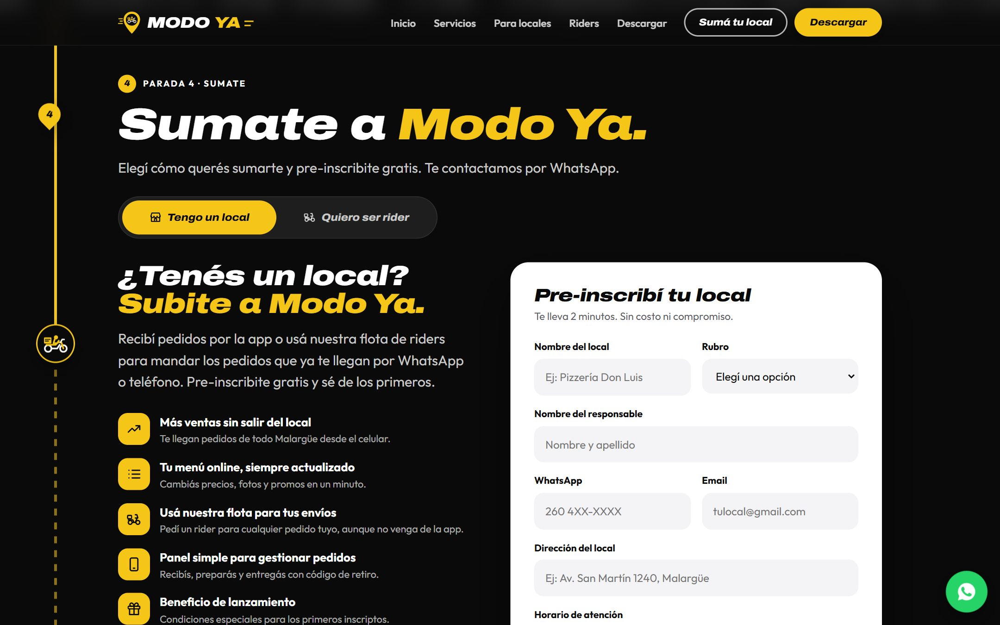

Malargüe, YA.Malargüe, YA.
MODO YA es mi proyecto: la plataforma de delivery de Malargüe, con una app para clientes, locales y administración, una app para riders y la landing de lanzamiento. Lo llevé de la idea al lanzamiento y lo desarrollé en equipo con Álvaro González.MODO YA is my project: Malargüe's delivery platform, with one app for customers, restaurants and admins, one app for riders and the launch landing page. I took it from idea to launch and built it together with Álvaro González.

Proyecto mío, desarrollado en equipo con Álvaro González desde Codea Desarrollos para una clienta de Malargüe. Las pantallas del rediseño y los locales de la landing usan datos de ejemplo.My project, built together with Álvaro González at Codea Desarrollos for a client in Malargüe. Redesign screens and landing restaurants use sample data.
Un pueblo con ganas de pedir, y sin app para hacerlo.A town ready to order, with no app to do it.
En Malargüe, en el sur de Mendoza, los locales venden por WhatsApp o por teléfono y cada uno resuelve el envío como puede. La clienta quería una plataforma local que sirviera para dos cosas: que los vecinos pidan desde una app, y que los locales usen una flota de riders para los pedidos que ya reciben.In Malargüe, in southern Mendoza, restaurants sell over WhatsApp or the phone and each one handles delivery however it can. The client wanted a local platform for two things: letting neighbors order from an app, and letting restaurants use a rider fleet for the orders they already get.
- Ver qué está abierto, con menú y preciosSee what's open, with menu and prices
- Pagar sin efectivoPay without cash
- Saber dónde está su pedidoKnow where their order is
- Vender por la app sin dejar de vender por WhatsAppSell in the app without giving up WhatsApp
- No depender de tener delivery propioNot depend on having their own delivery
- Actualizar menú y precios en un minutoUpdate menu and prices in a minute
- Un equipo de dos personasA two-person team
- Ubicación del rider en segundo plano: el permiso que más revisan las tiendasBackground rider location: the permission app stores scrutinize most
- Reglas de negocio todavía abiertas al empezarBusiness rules still open when we started
Cuatro personas en cada pedido.Four people in every order.
Cada pedido pasa por un cliente, un local, un rider y la administración. El rol de la cuenta decide qué pantallas ve cada uno.Every order goes through a customer, a restaurant, a rider and the admin team. The account's role decides which screens each one sees.
| RolRole | Qué necesitaWhat they need | App | Cómo entraHow they join |
|---|---|---|---|
| ClienteCustomer | Pedir comida o un mandado y seguirlo en vivoOrder food or an errand and track it live | MODO YA | Se registra soloSigns up on their own |
| LocalRestaurant | Recibir pedidos o pedir un rider para los suyosReceive orders, or request a rider for their own | MODO YA | Lo da de alta la administraciónCreated by the admin team |
| Rider | Aceptar envíos cerca y saber cuánto cobrarAccept nearby deliveries and know what to collect | MODO YA Rider | Lo da de alta la administraciónCreated by the admin team |
| AdministraciónAdmin | Aprobar cuentas, fijar tarifas y ver la operaciónApprove accounts, set fees and oversee operations | MODO YA | Se crea a manoCreated manually |
El problema, en una pregunta.The problem, in one question.
¿Cómo podríamos…?How might we…?¿Cómo podríamos lograr que un vecino de Malargüe pida en minutos y sepa siempre dónde está su pedido, y que cualquier local pueda vender y enviar, tenga delivery propio o no?How might we let a Malargüe neighbor order in minutes and always know where their order is, and let any restaurant sell and deliver, whether or not it has its own delivery?
Principios de diseñoDesign principles
Local primeroLocal first
Tono, horarios y ejemplos de Malargüe. El día lo decide Malargüe, no el reloj del servidor.Malargüe's voice, hours and examples. The day is set by Malargüe, not the server clock.
Siempre sé dónde estáAlways know where it is
Estados claros del pedido, el rider en el mapa y un código para confirmar la entrega.Clear order states, the rider on the map and a code to confirm delivery.
No prometer lo que no pasaDon't promise what won't happen
Cada texto de la app tiene que tener un flujo detrás que lo cumpla.Every line of copy in the app needs a flow behind it that delivers.
Las decisiones que le dieron forma.The decisions that shaped it.
El rider necesita ubicación en segundo planoRiders need background location
Es el permiso que más revisan Apple y Google. Dentro de una app de clientes, lo más probable es que rechacen la publicación.It's the permission Apple and Google scrutinize most. Inside a customer app, publication would most likely be rejected.
Dos apps, no unaTwo apps, not one
MODO YA para clientes, locales y administración, y MODO YA Rider aparte. Comparten el sistema de diseño y la lógica en paquetes comunes.MODO YA for customers, restaurants and admins, and a separate MODO YA Rider. They share the design system and logic through common packages.
Los locales ya venden por WhatsAppRestaurants already sell on WhatsApp
Pedirles que dejen sus canales para usar solo la app era perderlos.Asking them to drop their channels for the app alone meant losing them.
Marketplace y cadetería en un mismo motorMarketplace and courier on one engine
El local puede recibir pedidos por la app o pedir un rider para un pedido que le llegó por otro lado. Los dos usan el mismo motor de envíos y la misma asignación por cercanía.A restaurant can receive in-app orders or request a rider for an order that came in elsewhere. Both run on the same delivery engine and proximity-based assignment.
¿Quién confirma que llegó?Who confirms it arrived?
Sin una prueba de entrega, un pedido "entregado" que no llegó termina en discusión.Without proof of delivery, a "delivered" order that never arrived turns into an argument.
Código de entrega de 4 dígitos4-digit delivery code
El cliente ve un código y se lo dice al rider para cerrar la entrega. El local entrega al rider con un código de retiro.The customer sees a code and tells the rider to close the delivery. The restaurant hands over to the rider with a pickup code.
Elegir el propio rolPicking your own role
Si el usuario pudiera decir que es local o administración al registrarse, podría ver y tocar lo que no le corresponde.If users could claim to be a restaurant or admin at sign-up, they could see and change what isn't theirs.
El rol lo asigna el servidorThe server assigns the role
Los clientes se registran solos. Locales y riders los da de alta la administración con usuario y contraseña generados. La base lee el rol solo de datos que escribe el servidor.Customers sign up on their own. Restaurants and riders are created by the admin team with generated credentials. The database only reads the role from data the server writes.
Reglas sin definirUndefined rules
Tarifa por kilómetro, radio de búsqueda o tiempo para aceptar un envío: números que la clienta todavía no había decidido.Per-kilometer fee, search radius or time to accept a delivery: numbers the client hadn't decided yet.
Todo configurable, nada inventadoEverything configurable, nothing invented
Esos valores se cambian desde el panel sin publicar otra versión. El kilómetro adicional arrancó en $0 a propósito, para no inventar un cobro que nadie había definido.Those values change from the admin panel without shipping a new version. The extra-kilometer fee started at $0 on purpose, to avoid inventing a charge nobody had defined.
Preguntar antes de construir. Revisar antes de lanzar.Ask before building. Review before launching.
Dos documentos ordenaron el trabajo con la clienta y dentro del equipo.Two documents organized the work with the client and within the team.
Ordenadas por cuánto bloqueanRanked by how much they block
Primero las que cambian cómo se construye: ¿el envío se paga en efectivo o digital?, ¿qué documentación se le pide a un rider?, ¿qué pasa con un pedido cancelado? Después, los números que se pueden ajustar más adelante desde el panel. Cada pregunta explica por qué importa y compara las opciones.First, the ones that change how it's built: is delivery paid in cash or digitally? What documents does a rider need? What happens to a cancelled order? Then, the numbers that can be tuned later from the panel. Each question explains why it matters and compares the options.
15 hallazgos antes de lanzar15 findings before launch
Recorrimos toda la app buscando huecos entre lo que dicen las pantallas y lo que el sistema puede cumplir, y los ordenamos por gravedad.We went through the whole app looking for gaps between what the screens say and what the system can actually do, and ranked them by severity.
Algunos hallazgosSome findings
Una promesa sin flujoA promise with no flow
Al elegir "Transferencia", la app decía "te pasamos el alias al confirmar", pero ninguna pantalla lo mostraba.Choosing "Bank transfer", the app said "we'll send you the alias on confirmation", but no screen ever showed it.
"Todo en orden" cuando falla"All good" when it fails
Si se cortaba la red, el panel de administración mostraba ceros y un cartel verde, sin ningún aviso de error.With no connection, the admin dashboard showed zeros and a green banner, with no error at all.
Un botón que no hace nadaA button that does nothing
"Confirmar" en el código de entrega se veía activo con 1 a 3 dígitos, y al tocarlo no pasaba nada ni explicaba por qué."Confirm" on the delivery code looked active with 1 to 3 digits, and tapping it did nothing without explaining why.
Negro, amarillo y un pedido a la vista.Black, yellow and an order in plain sight.
El rediseño llevó la identidad de la marca a los tokens del sistema de diseño y recorrió el flujo completo del cliente, de abrir la app a calificar la entrega.The redesign carried the brand identity into the design system tokens and covered the full customer flow, from opening the app to rating the delivery.


Tarjeta dentro de la app con Mercado Pago, transferencia o efectivo.In-app card payments via Mercado Pago, bank transfer or cash.
Suscripción mensual con envío gratis, que se renueva sola y se da de baja de un toque.Monthly subscription with free delivery that renews itself and cancels in one tap.
Notificaciones push, sonidos propios por rol y recordatorios de carrito abandonado.Push notifications, role-specific sounds and abandoned-cart reminders.
El cliente también puede pedir un rider para llevar o buscar lo que necesite.Customers can also request a rider to drop off or pick up whatever they need.
Una landing que se recorre como un envío.A landing page you travel like a delivery.
La landing de lanzamiento tenía tres públicos: vecinos que bajan la app, locales que se suman y personas con moto que quieren ser riders. La organizamos como la ruta de un rider: una línea punteada a la izquierda acompaña el scroll y cada sección es una parada.The launch landing page had three audiences: neighbors downloading the app, restaurants joining and people with a motorbike who want to ride. We organized it as a rider's route: a dashed line on the left follows the scroll and each section is a stop.





De cero a lanzado en semanas.From zero to launched in weeks.
Las apps se instalan en Android y Windows y se actualizan solas: cada versión nueva se publica automáticamente desde el repositorio.The apps install on Android and Windows and update themselves: every new version is published automatically from the repository.
Lo que me llevo.What I'm taking away.
- Un marketplace tiene cuatro usuarios, no uno: cada decisión se mira desde el cliente, el local, el rider y la administración.A marketplace has four users, not one: every decision is checked from the customer's, restaurant's, rider's and admin's side.
- Lo incompleto casi nunca está en el código a medio escribir, sino en los huecos entre lo que la pantalla promete y lo que el sistema hace.What's unfinished is rarely half-written code; it's the gap between what a screen promises and what the system does.
- Ordenar las preguntas por cuánto bloquean hizo que la clienta decidiera primero lo que más caro salía cambiar.Ranking questions by how much they block got the client deciding first on what was most expensive to change.
- Cerrar los hallazgos pendientes de la revisión, empezando por los de gravedad alta.Close the remaining review findings, starting with the high-severity ones.
- Medir con datos reales cuánto tarda un rider en aceptar y ajustar el radio de búsqueda.Measure with real data how long riders take to accept, and tune the search radius.
- Sumar pantallas para reclamos y para que riders y locales vean sus liquidaciones.Add screens for complaints and for riders and restaurants to see their payouts.
Turno
Una app para sacar turnos médicos en tres toques, pensada para cualquier edad.An app to book medical appointments in three taps, designed for any age.